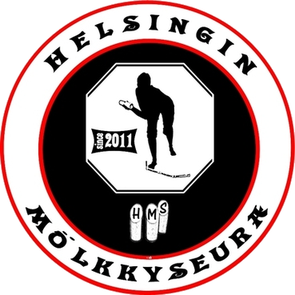

Helsingin Mölkkyseura - HMS on rekisteröity yhdistys, jonka tarkoituksena on mahdollistaa lajin enemmän ja vähemmän aktiivisille harrastajille ympärivuotinen mölkkyily pääkaupunkiseudulla. Yhdistys perustettiin syksyllä 2011.
HMS ry:n jäsenmaksu vuodelle 2024 tuttu ja turvallinen 15 €!
Jäsenmaksuja voi suorittaa seuraavasti:
FI86 8001 4710 3196 52
Helsingin Mölkkyseura HMS ry
VIITE: 1669
Muistathan käyttää viitenumeroa!
-
What is HMS? This is HMS!
Helsingin Mölkkyseura HMS ry on avoin kutsu- ja haasteturnauksille.
Jos olet järjestämässä tapahtumaa, jossa Mölkky voisi olla hyvä laji tai kaipaat opetusta lajin saloihin, olemme käytettävissänne!
Ota rohkeasti yhteyttä sähköpostitse ( hms.molkky@gmail.com ) ja kerro lisää - tehdään yhdessä Mölkkyä tunnetuksi!
Lisää Mölkystä : Kortteliliiga tai Mölkkyliitto tai Molkky.com tai Mölkk Your World tai Molkky.World
-